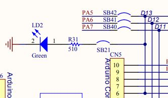
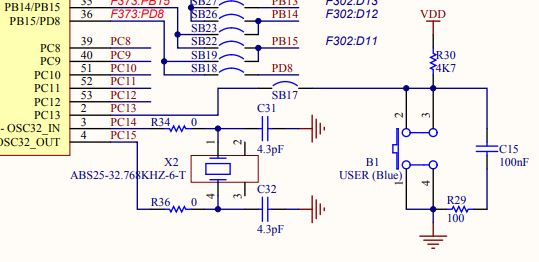

Prototypage (rapide)
Table of Contents
Microcontroller
 Un microcontroller (µC) est une puce programmable en C ou C++ pour la majorité des cas.
En première approche, on peut voir cette puce comme un micro ordinateur, car elle intègre non seulement une unité de calcul (micro processeur), mais egalement des périphériques.
En voici quelques exemples: mémoire FLASH, mémoire RAM, convertisseur (NA ou AN), controller de bus…
Du fait que tout soit intégré dans une puce, les microcontroller sont compacts, économes en énergie et donc tout désigné pour être embarqué.
La plupart du temps le µC va s'interfacer avec des capteurs dont le rôle est de capter des grandeurs physiques.
En général, les variations de ces grandeurs physiques feront varier une resistance, une capacité ou inductance qui au final pourra être convertie en tension (ou en courant), et donc exploitable par le µC.
Un microcontroller (µC) est une puce programmable en C ou C++ pour la majorité des cas.
En première approche, on peut voir cette puce comme un micro ordinateur, car elle intègre non seulement une unité de calcul (micro processeur), mais egalement des périphériques.
En voici quelques exemples: mémoire FLASH, mémoire RAM, convertisseur (NA ou AN), controller de bus…
Du fait que tout soit intégré dans une puce, les microcontroller sont compacts, économes en énergie et donc tout désigné pour être embarqué.
La plupart du temps le µC va s'interfacer avec des capteurs dont le rôle est de capter des grandeurs physiques.
En général, les variations de ces grandeurs physiques feront varier une resistance, une capacité ou inductance qui au final pourra être convertie en tension (ou en courant), et donc exploitable par le µC.
| Capteurs | Grandeur physique |
|---|---|
| Bouton | Pression |
| Potentiometre | Angle |
| Thermoresistance | Temperature |
| Photodiode | Lumière |
| … | … |
De là, il pourra réaliser un traitement et des actions, via des actionneurs auquels il est également interfacer.
| Actionneurs |
|---|
| LED |
| Servomoteur |
| Moteur |
| Ecran |
| … |
Dans d'autre configurations, le µC et les capteurs forment un sous système intégré dans un système plus large. Ce sous système n'effectue aucune action à part renvoyer ses données à un autre sous sytème. Par exemple dans une automobile ou en IOT.

En général le µC se trouve sur une carte électronique où l'on pourra trouver le minimum pour travailler comme des boutons, des LEDS et des connecteurs… La plus connues de ces cartes est la carte ARDUINO UNO, architecturée autour d'un µC ATmega328P.
STM32 Nucleo
Nous utiliserons une carte d'évaluation du constructeur ST Microelectronics. Cette carte d'évaluation est issue de la gamme Nucleo.
| Board | Nucleo STM32L476RG | Arduino Uno |
|---|---|---|
| Family | ARM Cortex-M4 | ATMega 328P |
| Vendor | ST Microelectronics | ATMega |
| SRAM | 128 KB | 2 KB |
| Flash | 1 MB | 32 KB |
| Frequency | up to 80MHz | 16 |
| FPU | YES | NO |
| Timers | 16 | 3 |
| ADCs | 1x 12-bit | 6 (10 bits) |
| UARTs | 3 | 1 |
| SPIs | 3 | 1 |
| I2Cs | 3 | 1 |
| RTC | 1 | 0 |
| CAN | 1 | 1 |
| Vcc | 1.71 V - 3.6V | 3.3 - 5V |
Voici les documents relatifs à la carte d'évaluation Nucleo STM32L476RG
LED (Utilisateur)
Hardware

Keil Studio Ide
#include "mbed.h" #define WAIT_TIME_MS 100 DigitalOut led1(PA_5); int main() { while (true) { led1 = !led1; thread_sleep_for(WAIT_TIME_MS); } }
Cube IDE
#TBC
Bouton Poussoir (Utilisateur)
Hardware

Keil Studio Ide
#include "mbed.h" #define WAIT_TIME_MS 100 DigitalOut led1(PA_5); DigitalIn button(PC_13); int main() { while (true) { if(button==true){ led1 = false; } else{ led1 = true; } thread_sleep_for(WAIT_TIME_MS); } }
Cube IDE
#TBC
Servo Moteur (projet)
Un servomoteur est un système motorisé capable d'atteindre des positions prédéterminées, puis de les maintenir. La position est dans le cas d’un moteur rotatif, une valeur d'angle.
— (Définition Wihipédia)
Hardware
Keil Studio Ide
Afin d'ajouter la librairie Servo, copier coller l'URL suivante dans File/Add Mbed Library to Active Project
http://os.mbed.com/users/jasonberry/code/Servo/
#include "mbed.h" #include "Servo.h" #define WAIT_TIME_MS 500 Servo myservo(PA_8); int main() { myservo.position(0); while (true) { myservo.position(90); thread_sleep_for(WAIT_TIME_MS); myservo.position(0); thread_sleep_for(WAIT_TIME_MS); } }
Switch (projet)
Carte fille Seeed Grove Base Shield
Exercices
Exercice 1
Programmer la carte de façon à ce que la LED s'allume quand on appuie sur le bouton, reste allumé quand on le relache, puis s'éteint à la pression suivante.
Exercice 2
Programmer la carte de façon à ce que la LED s'allume 1 seconde puis s'éteigne quand on bascule le switch sur une position. La LED reste éteinte lorsque le switch est sur l'autre position.
Exercice 3
Programmer la carte de façon à ce que l'intensité de la luminosité de la LED augmente puis diminue jusq'à complétement d'éteindre, et cela de façon cyclique (période de 500ms)
Exercice 4
Programmer la carte de façon à ce le servo moteur face une rotation de 90° dans un sens, puis dans le sens inverse, et cela toue les 500 ms
Annexes
Nom de broches
Dans Keil Studio, le fichier definissant le nom des broches du composant est
TARGET_STM/TARGET_STM32L4/TARGET_STM32L476xG/pinNames.h
Voici un tableau permettant de faire le lien entre les noms des broches du composants (schéma), les noms utilisés par Keil et le connecteur au format Arduino situé sur la carte. Ainsi, une même broche peut être appelé par différent nom dans le code, suivant si l'utilisateur utilise le connecteur Arduino ou Morpho
| Schéma | Keil IDE | Arduino (Keil IDE) | Autre nom |
|---|---|---|---|
| PA0 | PA_0 | ARDUINO_UNO_A0 | |
| PA1 | PA_1 | ARDUINO_UNO_A1 | |
| PA2 | PA_2 | ARDUINO_UNO_D1 | CONSOLE_TX |
| PA3 | PA_3 | ARDUINO_UNO_D0 | CONSOLE_RX |
| PA4 | PA_4 | ARDUINO_UNO_A2 | |
| PA5 | PA_5 | ARDUINO_UNO_D13 | LED1 |
| PA6 | PA_6 | ARDUINO_UNO_D12 | |
| PA7 | PA_7 | ARDUINO_UNO_D11 | |
| PA8 | PA_8 | ARDUINO_UNO_D7 | |
| PA9 | PA_9 | ARDUINO_UNO_D8 | |
| PA10 | PA_10 | ARDUINO_UNO_D2 | |
| PA11 | PA_11 | ||
| PA12 | PA_12 | ||
| PA13 | PA_13 | ||
| PA14 | PA_14 | ||
| PA15 | PA_15 | ||
| PB0 | PB_0 | ARDUINO_UNO_A3 | |
| PB1 | PB_1 | | |
| PB2 | PB_2 | | |
| PB3 | PB_3 | ARDUINO_UNO_D3 | |
| PB4 | PB_4 | ARDUINO_UNO_D5 | |
| PB5 | PB_5 | ARDUINO_UNO_D4 | |
| PB6 | PB_6 | | |
| PB7 | PB_7 | | |
| PB8 | PB_8 | ARDUINO_UNO_D15 | |
| PB9 | PB_9 | ARDUINO_UNO_D14 | |
| PB10 | PB_10 | ARDUINO_UNO_D6 | |
| PB11 | PB_11 | | |
| PB12 | PB_12 | | |
| PB13 | PB_13 | | |
| PB14 | PB_14 | | |
| PB15 | PB_15 | | |
| PC0 | PC_0 | ARDUINO_UNO_A5 | |
| PC1 | PC_1 | ARDUINO_UNO_A4 | |
| PC2 | PC_2 | | |
| PC3 | PC_3 | | |
| PC4 | PC_4 | | |
| PC5 | PC_5 | | |
| PC6 | PC_6 | ARDUINO_UNO_D10 | |
| PC7 | PC_7 | ARDUINO_UNO_D9 | |
| PC8 | PC_8 | ||
| PC9 | PC_9 | ||
| PC10 | PC_10 | ||
| PC11 | PC_11 | ||
| PC12 | PC_12 | ||
| PC13 | PC_13 | BUTTON1 | |
| PC14 | PC_14 | ||
| PC15 | PC_15 | ||
| PD2 | PD_2 | ||
| PH0 | PH_0 | ||
| PH1 | PH_1 |